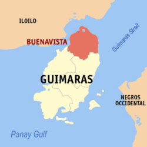
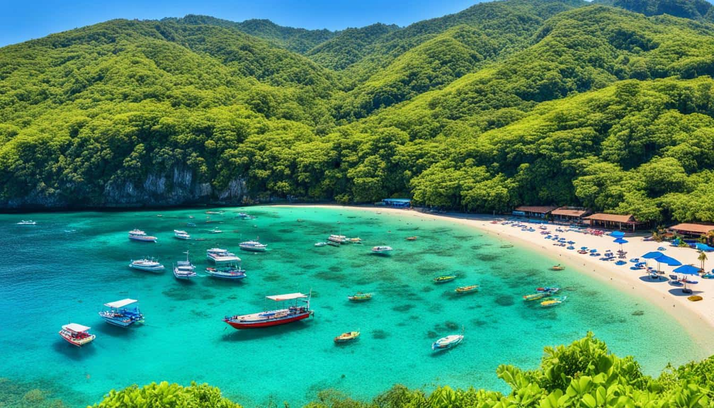

Buenavista
Largest municipality of Guimaras — fishing traditions, heritage sites, and coastal culture.


Buenavista is a coastal municipality in the island province of Guimaras, Philippines. It is the largest settlement in the province and is one of the five municipalities known for producing the famous Guimaras mango.
The municipality has a land area of 115.60 square kilometers (44.63 square miles), which makes up about 18.89% of Guimaras' total land area. According to the 2020 Census, Buenavista has a population of 52,899 people, representing 28.16% of the province's total population and about 0.67% of the Western Visayas region. This results in a population density of approximately 458 inhabitants per square kilometer (1,185 per square mile).
Based on the 2024 census, its population has grown to around 54,352 people.
Buenavista is also part of the group of municipalities known for producing the world-famous Guimaras mango, along with Jordan, San Lorenzo, Sibunag, and Nueva Valencia. The Guimaras mango is recognized for its exceptional sweetness and is the first Philippine product to receive geographical indication status.